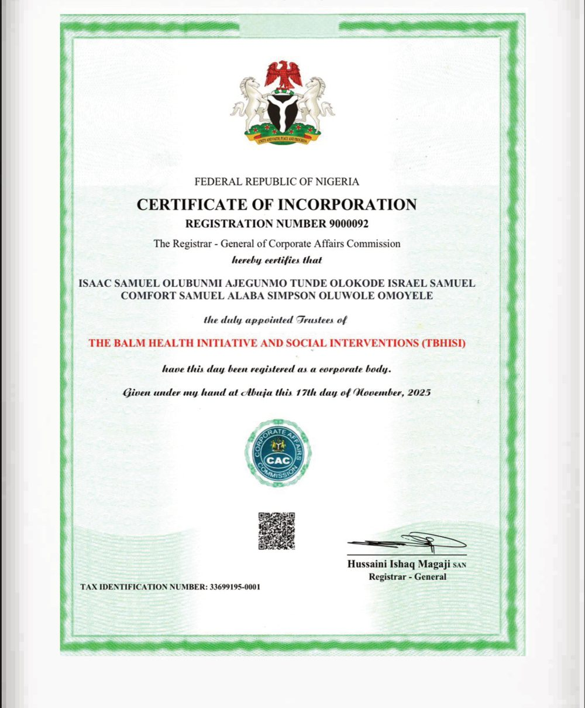
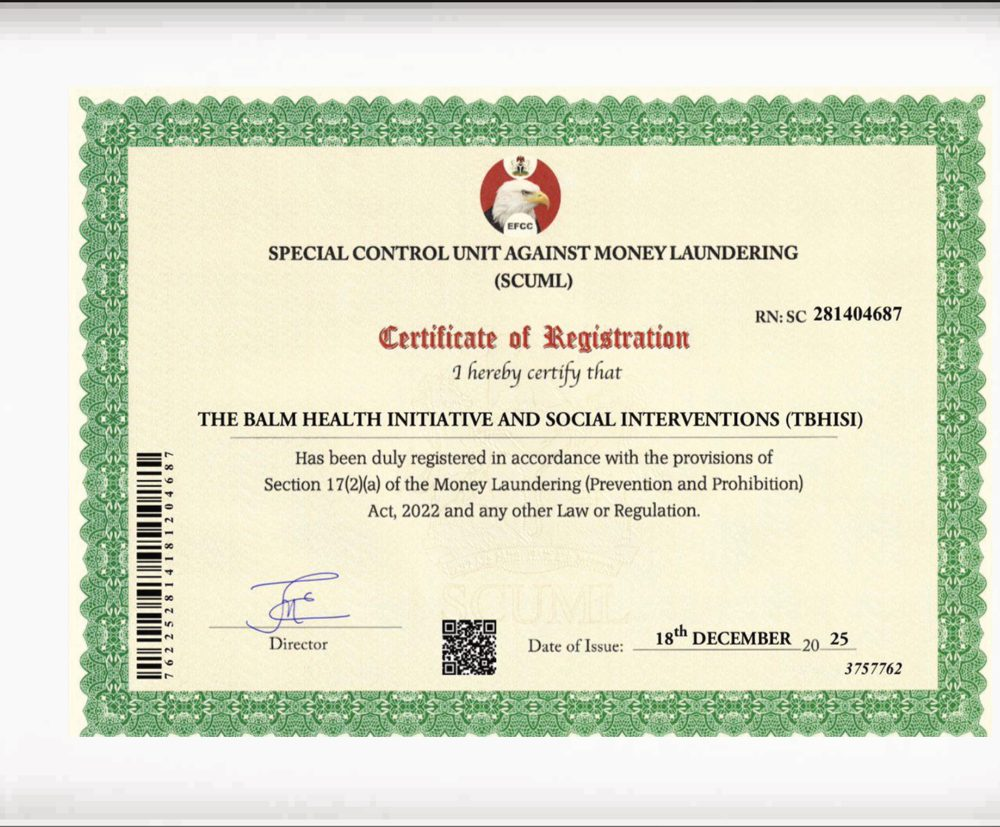

Regulatory Compliance & Financial Transparency
This is the one page on this site where our registration numbers and certificates live. Trust is built on what's disclosed, not what's claimed — here is exactly where we stand, including what we don't have yet.
Honest starting point: The Balm Health Initiative and Social Interventions (TBHISI) was incorporated with the Corporate Affairs Commission on 17 November 2025. As a newly registered organization, we do not yet have an audited financial statement or a completed annual report to publish. We are stating that plainly rather than making claims we can't back up. As soon as our first financial year closes and is reviewed, the report will be published on this page.
Registration & compliance status
We are committed to obtaining and maintaining all necessary operational and compliance certifications required for nonprofit and humanitarian organizations in Nigeria. These are the only registration numbers we publish, and this is the only page they appear on.
| Registration | Reference | Status |
|---|---|---|
| Corporate Affairs Commission (CAC) — Incorporated Trustees | RN 9000092 | Complete — 17 Nov 2025 |
| Special Control Unit Against Money Laundering (SCUML) | RN SC 281404687 | Complete — 18 Dec 2025 |
| Tax Identification Number (TIN) | 33699195-0001 | Complete |
| Audited annual financial statement | — | Not yet available — first reporting cycle in progress |
| State & Local Government operational approvals | — | In progress |
The certificates themselves
Rather than ask you to take the registration numbers above on faith, here are scans of the actual certificates.

CAC Certificate of Incorporation

SCUML Certificate of Registration
How we intend to allocate funds
We haven't run a full financial year yet, so we won't publish a program-vs-admin split we can't verify. What we can commit to, and will be held to publicly, is this:
- Donor and grant funds will be tracked against the specific program or intervention they were given for wherever a donor designates one.
- Our Finance & Administration Unit and Board of Trustees provide oversight on financial management, budgeting, procurement, and risk control.
- Once our first annual accounts are prepared, we will publish income, expenditure, and the program-to-administration ratio on this page — not a promotional summary, the actual numbers.
Financial sustainability approach
To reduce dependency on any single funding source, our strategy includes:
- Grant acquisition and donor engagement
- Strategic fundraising initiatives and corporate partnership development
- Community and philanthropic support mobilization
- Program sponsorship and collaborative financing
- In-kind contributions and volunteer support
Bank account for direct partnership & giving
- Account Name
- The Balm Health Initiative and Social Interventions (TBHISI)
- Account Number
- 1312023013
- Bank
- Zenith Bank PLC
For donation guidance, suggested amounts, and online giving, see Get Involved.